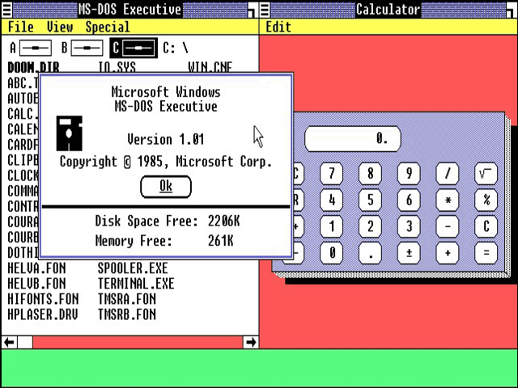
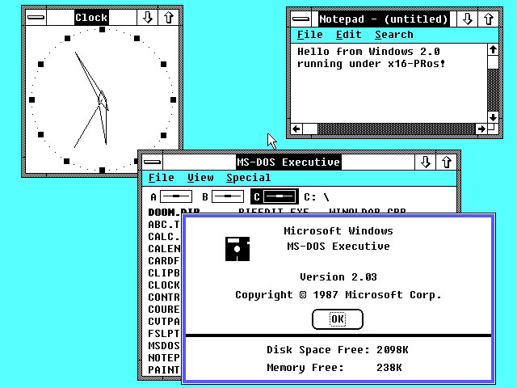
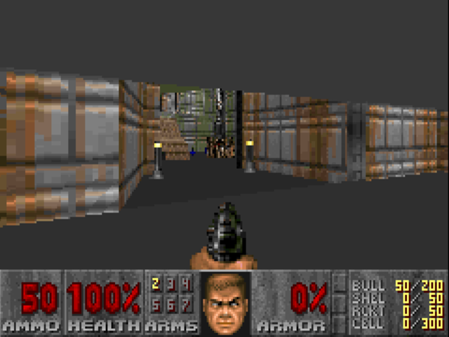
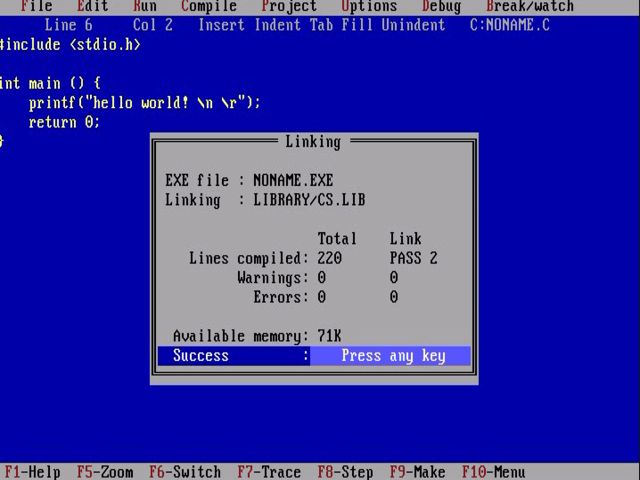
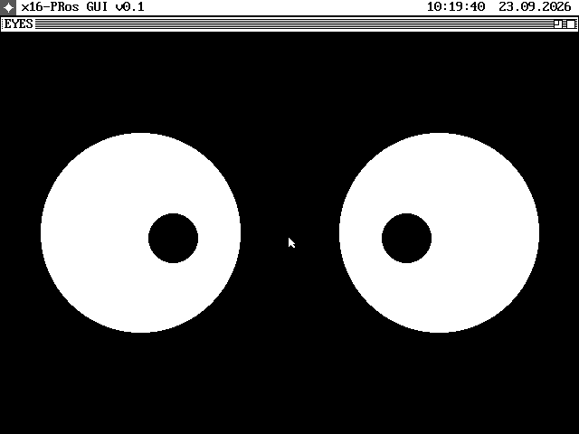
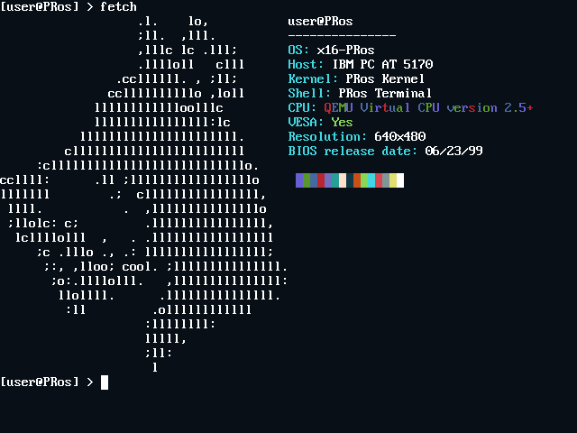
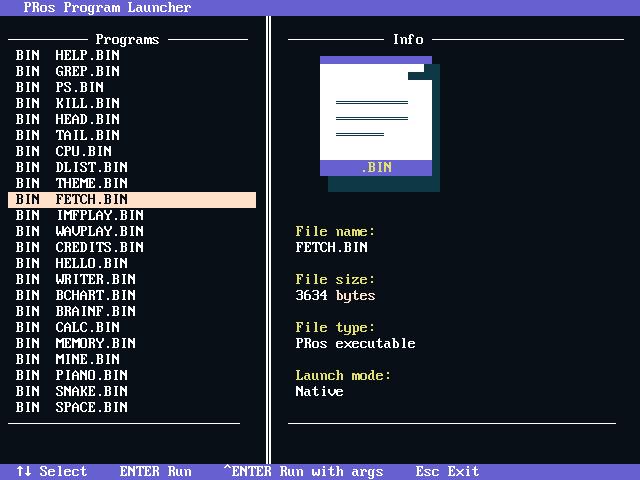
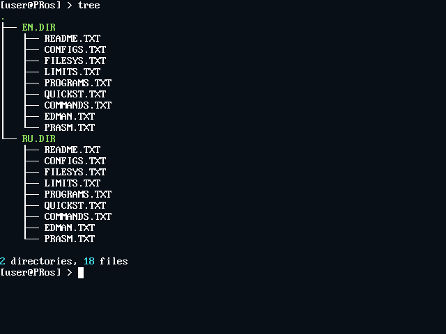

x16-PRos: fast and lightweight
A hand-written operating system that fits on a single floppy. It has a terminal, GUI, cooperative multitasking, its own assembler and a MS-DOS compatibility layer that runs real MS-DOS software.
Small
The kernel is < 64kib. The whole system with 40+ programs fits on a 1.44 MB floppy.
Three interfaces
Command line, TUI programs and a windowed GUI with draggable, resizable windows.
Runs MS-DOS software
Windows 1.01, Windows 2.03, DOOM and Turbo C run natively through the compatibility layer.

MS-DOS сompatibility
x16-PRos emulates the MS-DOS system call on top of it`s kernel, enabling the native execution of .COM and .EXE (MZ) programs. Compatibility is not yet complete, but it is being actively improved. At the moment, a large number of programs are already running.

Windows 1.01

Windows 2.03

DOOM

Turbo C 2.0
40+ built-it programs
Standard software package includes editors, file utilities, a native assembler, hex editor, media players, games and windowed GUI applications.




System requirements
Required
- CPU: Intel 80386
- RAM: 640 KB conventional
- Video: VGA
- Storage: 1.44 MB floppy
- Input: PS/2 or USB keyboard
- Firmware: BIOS, or UEFI with CSM
Recommended
- CPU: Intel 80486 or better
- RAM: 640 KB conventional
- Video: VGA
- Storage: hard disk (5 MB or more)
- Input: keyboard and PS/2 mouse
- Firmware: BIOS, or UEFI with CSM
- Sound: PC speaker
Running x16-PRos
Write the image to a USB stick and boot a real machine, or start it in an emulator.
Credits
Everyone who wrote code, reported bugs or supported the project.

PRoX-dev
Lead developer. Kernel, terminal, drivers, API, GUI, MS-DOS compatibility layer, PRASM and most of the software package creator.
Desvor
Creator of the "ED" editor and its manual. Added command-line history to PRos Terminal

Qwez-dev
Creator of the Space Arcade game and the Windows build scripts.

Han Akbe sponsor
Corrected grammar across the documentation, edited and improved kernel code, developed libc for x16-PRos. Also supported the project financially.

Ilnar Karazbaev sponsor
Creator of the MEMORY program and a developer of libc for x16-PRos.

Saeta
Fixed a serious file system API bug, wrote the first version of CALC and added command-line arguments for PLE programs.

Loxsete
Creator of BCHART and the GUI wallpapers. Helped with kernel code early on.

Gabriel
Creator of the PROCENTC percentages calculator.

Cuzhima
Creator of the HEXEDIT hex editor.
Dexoron
Co-author of TETRIS.

litvincode
Creator of the v0.2 calculator.
Sponsors
People who backed the project with money. Thank you sooo much!
- anarh1st4710 000 RUB
- Vokich1 100 RUB
- Green_Bushy1 024 RUB
- PetruCHIOrus750 RUB
- Eduard700 RUB (10 USD)
- tanushqn400 RUB
- QQQ300 RUB
- tomoko248 RUB
- Dexoron163.95 RUB (861 KZT)
- relya150 RUB
- Tabako150 RUB
- sdkam100 RUB
- Nortyashka70 RUB
- Бочка60 RUB
- KlasterK50 RUB
- ayano4ka133850 RUB